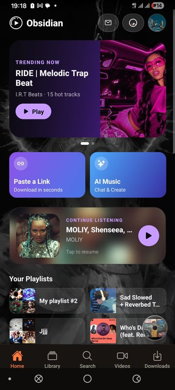
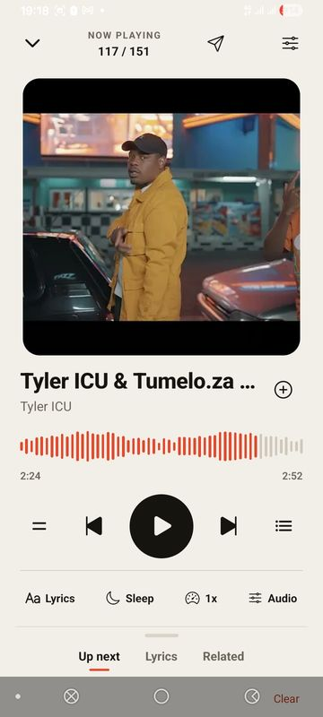
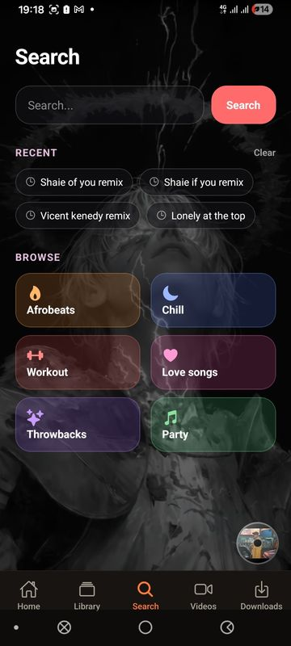
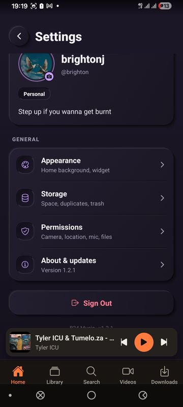

See it in action
Real screens from the app — dark, fast and made for music.




What you get
Free music, legallyAudius, Jamendo and the Free Music Archive are built in — no piracy, no gray areas.
Downloads & offlineSave songs to your phone and keep listening without data.
Playlists that follow youYour playlists, recently played, and suggestions based on what you listen to.
Share with friendsSend songs and playlists to friends inside the app.
Lyrics & moreRead lyrics while a song plays, set a sleep timer, control playback from the lock screen.
Made in UgandaBuilt by one developer on a phone. Open source on GitHub — see exactly what it does.
Questions
How do I install it?
- Tap Download for Android above.
- When the download finishes, open the file.
- If Android asks, allow installs from your browser.
- Tap Install.
Is it free?
Yes. Obsidian is free to use today, with no ads.
Where does the music come from?
From legal free catalogs: Audius, Jamendo and the Free Music Archive — artists who share their music freely.
Is it safe? Can I see the code?
Yes — Obsidian is open source. Every line of code is public on GitHub, and the APK is built straight from it.
Who makes it?
Obsidian is built by B24 Technologies in Uganda — one developer, one phone, zero budget.